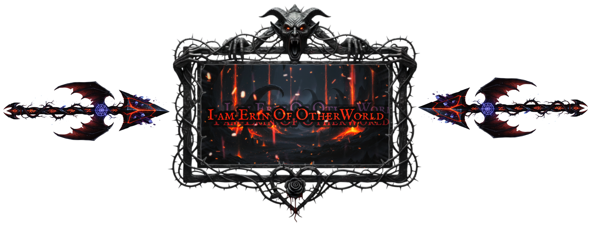
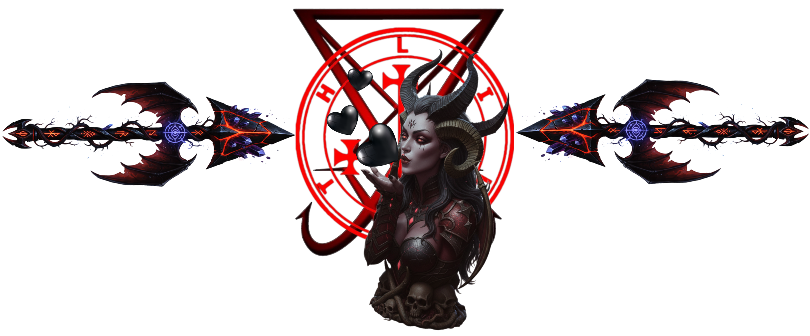
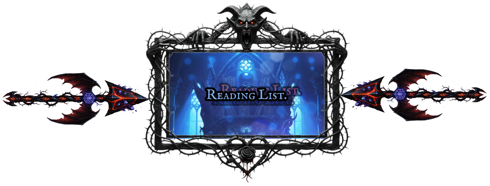

Alright there, hello... I'm Erin Nyght.
I am a Transgender Alt Goth Woman, Disciple of Lilith & Lucifer, in that I am a Luciferian and a Disciple of the Dark Feminine. I an esoteric pathworker who works primarily in the shadows in shadow work. Whilst I am a Reiki Master and Practitioner, who also reads tarot as means of Psychological check in in the moment: I also realize that when it comes to careers I am in, I am at a dead end. But, this is changing as I am leaning HTML, CSS, and more using Programing Hub and on my own to develop marketable skills to aim to get a better career with. What I do from there... I'll cross that bridge when I get to it.
But... this is me.

*This picture was taken at Hanford California USA Renissaince Faire*
Daily Divotional Prayer to Lilith.
Pathworking With Lilith
"A dried out oisis upon a shimmering grey desert, the full moon hangs silently in the midnight sky, the scent of Rose and Honey perfume breaks the still air, shadows grow deeper whilst creeping along the sands in silence."
"Lilith."
Prayer To Lilith
"Lilith, resplendent Goddess, powerfull mother, you who commands armies against the oppressor, your heart is emblazened with an endless passion. No fear can touch you, no cowardice is yours. With ebony hair darker than night, your laughter shakes mountains, your love brings all to their knees, & it is in your arms I feel nothing but saftey. Oh Dark Rose; glorious flame of passion... my queen: stand besides me as I battle through this life. With your Unending might, guide me. Bride of the first light, in your blazing heart, I am given rebirth."
Lilith Asks
~"In which ways do you need to break free from un necissary control today?"~ ~"In which ways do you need to reconnect with the part of yourself you were told was too "wild", too "uncontrolable?"~

Most of what I do, I started with working Renaissance Fairs as a Reiki Practitioner and Energy Healer.
Because I travel from event to event alot, even with the current direction to settle with the carreer change, this section contains a list of up coming updates and a calander of events and Ren Fairs I am looking to attend in the nearby future. As part of this continual project under development, a list of all Pagan and Luciferian Holidays will be listed within.
As this is a 2SLGBTQIA safe space; a Pagan and Luciferian/Satanic space... no Christian Holidays or any remnants of Imperialistic holidays are Welcome this is a people centric space. Spiritual Imperialism is not, and will never be, welcome here. For example: in the USA almost all holidays are Bank holidays that ignore the worker. I do not agree with this, so it is not a part of my site... period.
| Sun | Mon | Tue | Wed | Thu | Fri | Sat |
|---|---|---|---|---|---|---|
| 1 | 2 | 3 | 4 | 5 | ||
| 6 | 7 | 8 | 9 | 10 | 11 | 12 |
| 13 | 14 | 15 | 16 | 17 | 18 | 19 |
| 20 | 21 | 22 | 23 | 24 | 25 | 26 |
| 27 | 28 | 29 | 30 | 31 | 1st | 2nd |
Upcoming Events & Special Events
| Date & Time | Event Details |
| Dec 21st-22nd all night-long | Yule Celebration |
| Dec 25th | Sol Invictus Calebration |
| Feb 15th | Lupercallia Celebration |
| April 8th - May 7th | Fair Season Begins: Vicellia & Escondido |
| April 30th | Walpurgisnacht Celebration |

*Yule & The Winter Solstice, 21st-22nd of December The Winter Solstice is the shortest day of the year. meaning that the days will slowly begin to start getting longer. With Yule, the Pagan faith lights candles and keeps vigilant watch at night so the fires lighting the way for their sun god to return to the world after his rebirth. It is a time of reflection, renewal, and hope as the light begins to return to the world.
The Luciferian/Satanist who celebrates Yule see this celebration in much the same ways as Lucifer Morningstar returns to the world after his rebirth into this world on the Solstice. The Luciferian/Satanist uses this time to reflect on their own life, and recommit themselves to the pursuit of knowledge and self empowerment. It is a time of hope, as the light begins to return to the world.
*Sol Invictius, 25th of December: A Luciferian's celebration of Sol Invictus (the Unconquered Sun) is a deeply personal and symbolic event, distinct from its Roman pagan origins, often occurring near the Winter Solstice (December 25th in the Roman calendar) or the shortest day of the year. For a Luciferian, the holiday is less about worshiping a solar deity and more about venerating Lucifer as a symbol of enlightenment, self-determination, and the triumph of knowledge over ignorance.
Luciferianism, which often views Lucifer as a "Light-Bringer" rather than the Christian devil, interprets the return of the Sun's strength after the year's longest night as a powerful metaphor. The celebration centers on the individual's inner light and intellect—the "light of reason" that is "unconquered" by darkness, dogma, or superstition.

This is my personal reading list: Kindle & .PDFs.
Both read and TBR
The Satanic Bible: Anton Salazar Lavey.
The Infernal Gospels: Rev. Cain
Joy of Satan: JoyOfSatan.com (.PDF)
Lilith: Goddess of Sitra Ahra: Black Tower Publishing
Lilith's Bible Vol 1: Mosheh Ely
The Lesser Key Of Solomon: S.L. MacGregor Mathers & Aleister Crowley
Embracing Lilith: Mark H. Williams
Lilith: Goddess of Darkness and Light: David Thompson
Lucifer And The Hidden Demons: Thodore Rose
Goetia Pathworking: Corwin Hargrove
Demon Queen Naamah: Nyx Corven
Demon Queen Agrat: Nyx Corven
Samael: The Poison of God: Nyx Corven
Pathworking With Lilith: Moshe Ely
Luciferian Bible: Eugene Dik
Daemonium Paimon: Seth Helix
Asmodeus: Prince of Lust and Wrath: Seth Helix
Tree Of Qliphoth: Edited by Asenath Mason
Sex Priestess: Nadine Lee
The Filthy Grimorie: Jareth Tempest
Sex, Sorcery, And Spirit: Jason Miller
More entries will be added to this list as time goes on along this journey into the Left Hand Path (LHP) continues.